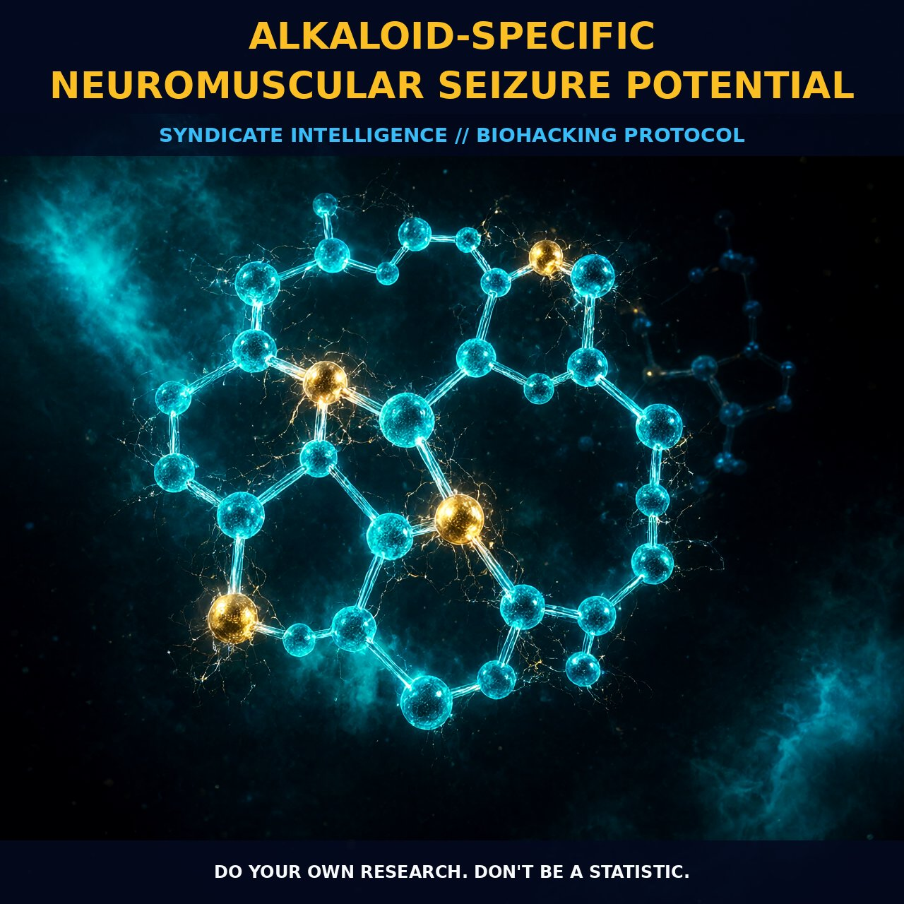

Optimizing Neuromuscular Tone via Alkaloid-Specific Receptor Modulation

1. The Pharmacodynamic Architecture
The neuromuscular profile of Mitragyna speciosa is defined by the distinct pharmacodynamic interplay between its primary alkaloid, mitragynine, and the minor but hyper-potent 7-hydroxymitragynine. Mitragynine constitutes approximately 66% of the total alkaloid content and functions primarily as an adrenergic agonist at lower concentrations. It engages mu-opioid receptors through a G-protein biased mechanism, selectively modulating signaling pathways without the broad receptor desensitization seen in traditional opioids.
This specific binding affinity allows for significant analgesic and stimulant effects while maintaining respiratory safety, a critical distinction from classic opioid agonists that can induce severe respiratory depression through heavy kappa and delta receptor engagement. The structural stability of mitragynine supports its role as the foundational stimulus for focus and physical energy, creating a baseline neuromuscular tone that is responsive rather than suppressive.
In contrast, 7-hydroxymitragynine, though present in raw leaf material at less than 2% concentrations, exhibits a potency factor ranging from 13 to 46 times that of morphine when acting on the same opioidergic pathways. This compound is the primary driver of the sedative mode, effectively dampening nociceptive signaling and increasing muscular relaxation at higher dosages. The danger zone for neuromuscular disruption lies in semi-synthetic extracts where 7-hydroxymitragynine concentrations are artificially elevated, as this chemical imbalance significantly raises the risk of physical dependence and vestibular instability.
2. Biological Leverage and Systemic Efficiency
The stimulant properties derived from Mitragyna speciosa share mechanistic parallels with alkaloids found in Coffea species, yet they operate through a unique adrenergic and serotonergic convergence. At low doses, the adrenergic agonism of mitragynine increases cortical arousal and physical energy without triggering the sympathetic overdrive often associated with high-catecholamine states.
This creates a state of heightened alertness where neuromuscular readiness is preserved but anxiety pathways remain moderated, largely due to the G-protein biased nature of the opioid receptor activation which prevents the excessive downstream signaling that leads to dysphoria. The biological leverage here is the ability to tune the neuromuscular system toward efficiency, reducing perceived exertion while maintaining precise motor control through selective receptor modulation.
However, the neuromuscular ceiling is determined by the accumulation of these alkaloids and their impact on the vestibular system and autonomic balance. As dosage increases beyond 4 grams, particularly with Red vein varieties rich in 7-hydroxymitragynine, the shift toward opioidergic sedation can induce a state of muscular heaviness that borders on incapacitation if the dose-response curve is not respected.
The literature notes that human pharmacokinetic curves are informative but current science has not yet published precise dose-response thresholds for adverse neuromuscular effects specifically tied to mitragynine and 7-hydroxymitragynine concentrations in vivo. This gap means that while we understand the receptor dynamics qualitatively, the exact threshold for vestibular disruption known colloquially as The Wobbles remains a practical metric derived from user experience rather than a fixed biochemical constant.
3. Tactical Protocol Implementation
Protocol design must prioritize alkaloid specificity over total plant mass, utilizing dosage ranges that respect the differential potency of mitragynine and 7-hydroxymitragynine. For the Focus Mode, consuming 1 gram to 2 grams of White or Green vein material leverages the high-mitragynine profile to achieve adrenergic stimulation with minimal opioidergic drag. This dosage keeps the compound primarily in its stimulant configuration, supporting cognitive drive and neuromuscular alertness without pushing the vestibular system into instability.
When transitioning to the Recovery Mode, increasing the intake to 4 grams through 6 grams of Red vein material introduces sufficient 7-hydroxymitragynine to facilitate deep tissue relaxation and analgesia, capitalizing on the potent opioid agonist activity for somatic relief while keeping respiratory function intact.
The daily upper limit should be capped at 15 grams within a 24-hour period to prevent the accumulation of alkaloids that disrupt vestibular processing and lead to significant neuromuscular wobbles. This ceiling is not arbitrary but reflects the saturation point of plasma protein binding and metabolic stability for the major alkaloids as observed in human pharmacokinetic assessments.
For those seeking long-term stability, maintaining tolerance through this defined range prevents the downregulation of adrenergic receptors and reduces the likelihood of dependence associated with high 7-hydroxymitragynine loads. Practitioners should monitor their specific response to semi-synthetic extracts which may contain elevated levels of the minor alkaloid, adjusting their dose downward if signs of sedative overload or vestibular drift appear before reaching the standard upper limit.
4. Prostar Life Hack
Avoid the Semi-Synthetic Trap: If you are using concentrated extracts, check the 7-hydroxymitragynine ratio. Because this minor alkaloid is up to 46x more potent than morphine, standard 'green' dosage guidelines often lead to vestibular drift (The Wobbles) in high-potency formulas. Reduce your dose by 20% when using semi-synthetic concentrates to preserve neuromuscular clarity without sacrificing analgesic benefit.
Prostar Life Hack
Avoid the Semi-Synthetic Trap: If you are using concentrated extracts, check the 7-hydroxymitragynine ratio. Because this minor alkaloid is up to 46x more potent than morphine, standard 'green' dosage guidelines often lead to vestibular drift (The Wobbles) in high-potency formulas. Reduce your dose by 20% when using semi-synthetic concentrates to preserve neuromuscular clarity without sacrificing analgesic benefit.
[ AUTHOR: LEAD TECHNICAL RESEARCHER ]